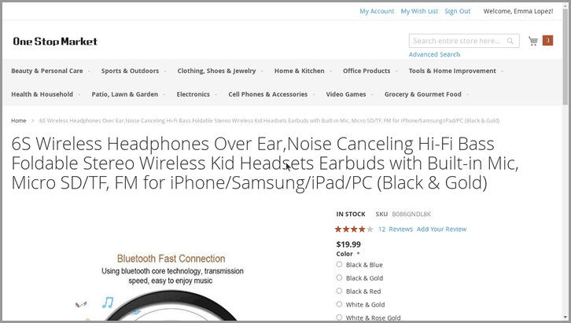

Any CUA
10+ built-in agents — GPT, Claude, Qwen, UI-TARS, MAI-UI — or compose your own from the building blocks we ship. Pick a pilot; the plane flies the same way in every env.
agents.make("gpt-5.5", env=env)
Simple Computer Use Agents



$ ▊
10+ built-in agents — GPT, Claude, Qwen, UI-TARS, MAI-UI — or compose your own from the building blocks we ship. Pick a pilot; the plane flies the same way in every env.
agents.make("gpt-5.5", env=env)
One unified action + observation space across Desktop, Web, and Mobile. Drop any agent into any env with near-zero overhead — flip the CRT channel above to watch the same cursor drive all three.
gym.make("lite.osworld@osworld_chrome_030eeff7")
Train any agent with RL on highly optimized tasks — CUAGym, CUAWorld, WebGym, MobileGym — GRPO and beyond on top of Slime.
$ uv sync --extra quick-start >>> import lite.gym as gym, lite.agents as agents >>> env = gym.make("lite.demo@create_file") >>> agent = agents.make("gpt-5.5", env=env) >>> result = await agent.sample(env) # -> LiteRLSample